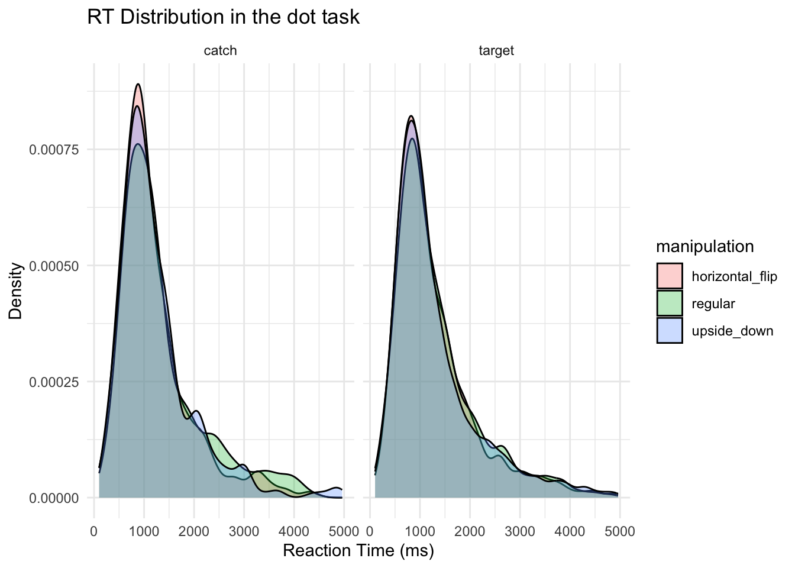
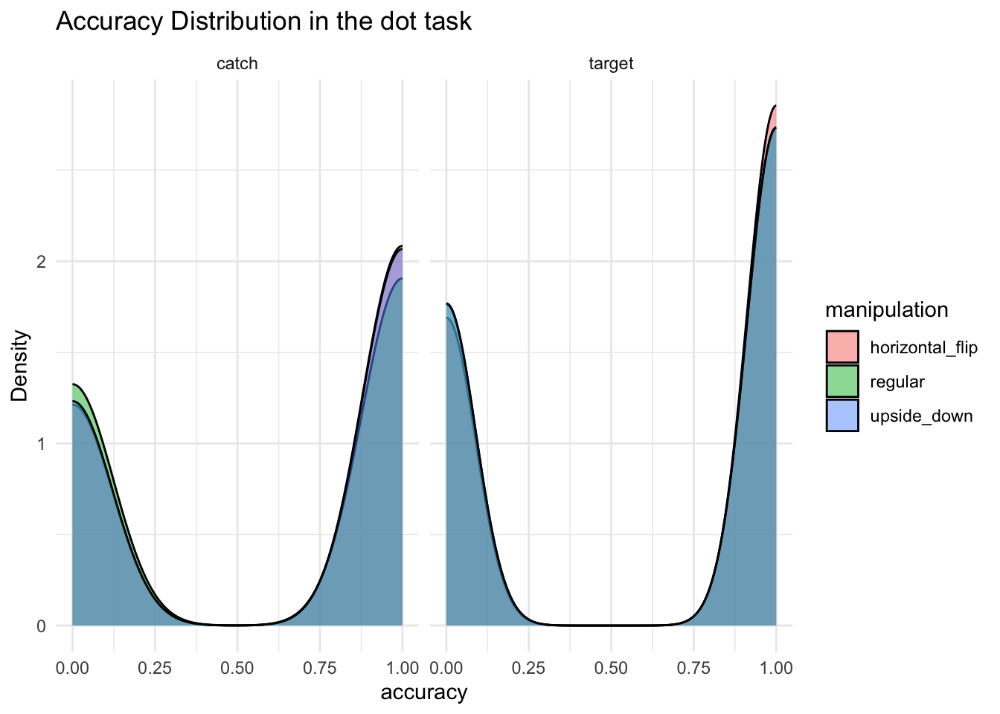

We keep only the data from participants that finished the experiment (n = 77)
Code
# Load necessary librarieslibrary(tidyverse)library(afex)library(kableExtra)# Define pathsexp_code <-"exp_3"data_dir <-file.path("..", "data", exp_code, "derivatives")# Load and combine all .csv files with exactly 195 rowsfile_list <-list.files(data_dir, pattern ="\\.(csv)$", full.names =TRUE)# Read as character (to avoid issues when binding) and keep only those with 195 rowsdfs <- file_list %>%map(~read_csv(.x, col_types =cols(.default ="c"))) %>%keep(~nrow(.) ==195)data <-bind_rows(dfs) %>%mutate(subject =as.factor(subject),rt =as.numeric(rt),dot_acc =as.numeric(dot_acc),verbal_acc_corrected =as.numeric(verbal_acc_corrected),semantic_distance =as.numeric(semantic_distance),manipulation =as.factor(manipulation),phase =as.factor(phase),image_type =as.factor(image_type),block_type =as.factor(block_type),phase =fct_relevel(phase, "pre", "post") ) %>%select(subject,rt,dot_acc,verbal_acc_corrected,semantic_distance,manipulation, phase,image_type,block_type,image_id)head(data)
# A tibble: 6 × 10
subject rt dot_acc verbal_acc_corrected semantic_distance manipulation
<fct> <dbl> <dbl> <dbl> <dbl> <fct>
1 0c5ljea8glu… 1201 0 NA NA upside_down
2 0c5ljea8glu… 509 0 NA NA regular
3 0c5ljea8glu… 929 1 NA NA horizontal_…
4 0c5ljea8glu… 1040 1 NA NA regular
5 0c5ljea8glu… 987 1 NA NA horizontal_…
6 0c5ljea8glu… 876 1 NA NA regular
# ℹ 4 more variables: phase <fct>, image_type <fct>, block_type <fct>,
# image_id <chr>
Descriptive plots
Code
data %>%filter(rt >100, rt <5000, dot_acc ==1) %>%ggplot(aes(x = rt, fill = manipulation)) +geom_density(alpha =0.3) +labs(title ="RT Distribution in the dot task",x ="Reaction Time (ms)",y ="Density" ) +facet_wrap(vars(image_type)) +theme_minimal()

Code
data %>%filter(rt >100, rt <5000) %>%ggplot(aes(x = dot_acc, fill = manipulation)) +geom_density(alpha =0.5) +labs(title ="Accuracy Distribution in the dot task",x ="accuracy",y ="Density" ) +facet_wrap(vars(image_type)) +theme_minimal()

Average number of trials per participant and condition (manipulation x phase x image_type) for the RT analysis:
Warning: Missing values for 17 ID(s), which were removed before analysis:
0sh5n3y8od84crq, 2h5ng7mrrjb20lp, 41zyv1nryq6h0qg, 5a39mmf73501z47, 5ba9jfyfdb5vmjf, 5w7lj49gckh4v2o, 6humc536hjh84hh, 7c6b72atuq7zxj9, bt0vhyfhwzs5yex, dux4elsp9493oa3, ... [showing first 10 only]
Below the first few rows (in wide format) of the removed cases with missing data.
subject pre_horizontal_flip pre_regular pre_upside_down
# 2 0sh5n3y8od84crq NA 1480.100 1489.720
# 12 2h5ng7mrrjb20lp NA NA 919.300
# 18 41zyv1nryq6h0qg NA 1187.975 1348.275
# 21 5a39mmf73501z47 NA 1658.450 NA
# 22 5ba9jfyfdb5vmjf 1035.8 1198.667 NA
# 24 5w7lj49gckh4v2o NA NA 165.350
# post_horizontal_flip post_regular post_upside_down
# 2 NA 1303.8500 1421.600
# 12 NA NA 1150.933
# 18 NA 1485.7429 1376.133
# 21 NA 1199.6000 NA
# 22 1374.88 975.6091 NA
# 24 NA NA 257.000
Warning: Missing values for 16 ID(s), which were removed before analysis:
0sh5n3y8od84crq, 2h5ng7mrrjb20lp, 41zyv1nryq6h0qg, 5a39mmf73501z47, 5ba9jfyfdb5vmjf, 5w7lj49gckh4v2o, 6humc536hjh84hh, 7c6b72atuq7zxj9, bt0vhyfhwzs5yex, dux4elsp9493oa3, ... [showing first 10 only]
Below the first few rows (in wide format) of the removed cases with missing data.
subject pre_horizontal_flip pre_regular pre_upside_down
# 2 0sh5n3y8od84crq NA 0.5000 0.625
# 12 2h5ng7mrrjb20lp NA NA 0.500
# 18 41zyv1nryq6h0qg NA 0.5000 1.000
# 21 5a39mmf73501z47 NA 0.2500 NA
# 22 5ba9jfyfdb5vmjf 1 0.5625 NA
# 24 5w7lj49gckh4v2o NA NA 0.500
# post_horizontal_flip post_regular post_upside_down
# 2 NA 0.5000 0.75
# 12 NA NA 0.75
# 18 NA 0.8750 0.75
# 21 NA 0.5000 NA
# 22 0.625 0.6875 NA
# 24 NA NA 0.75